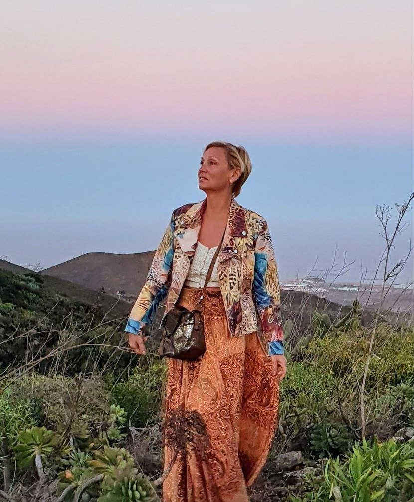
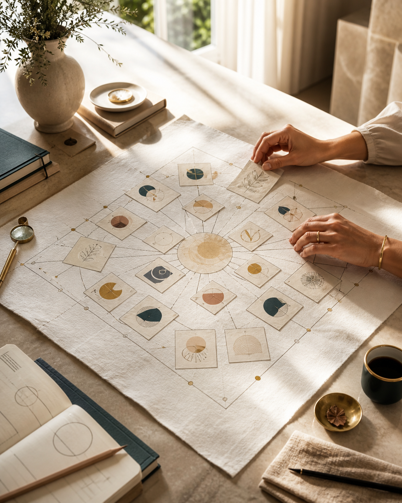
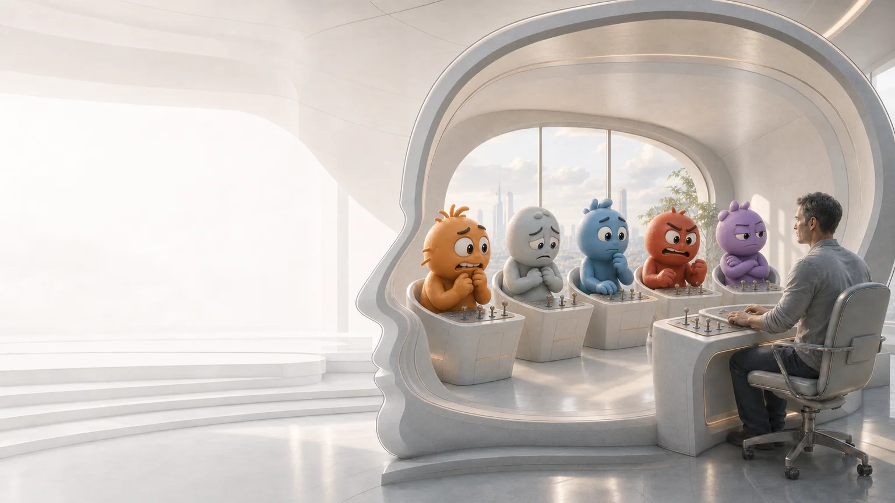
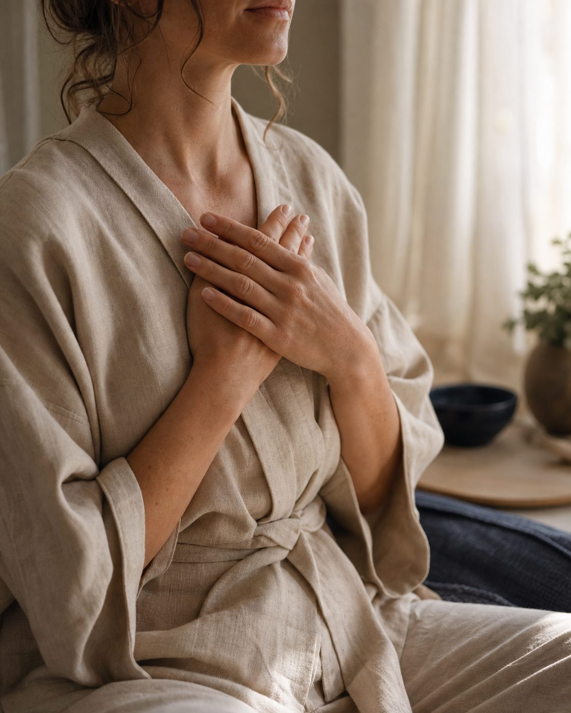
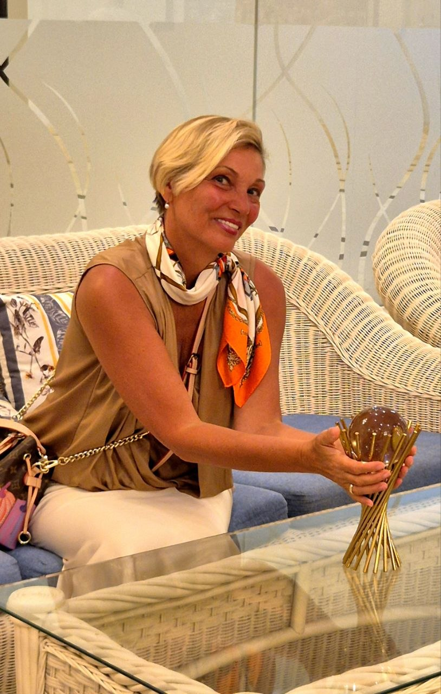
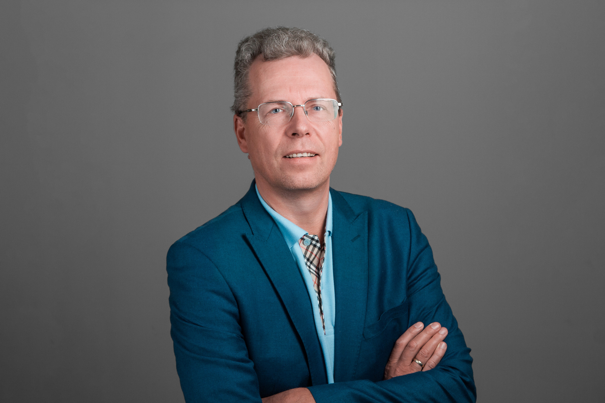
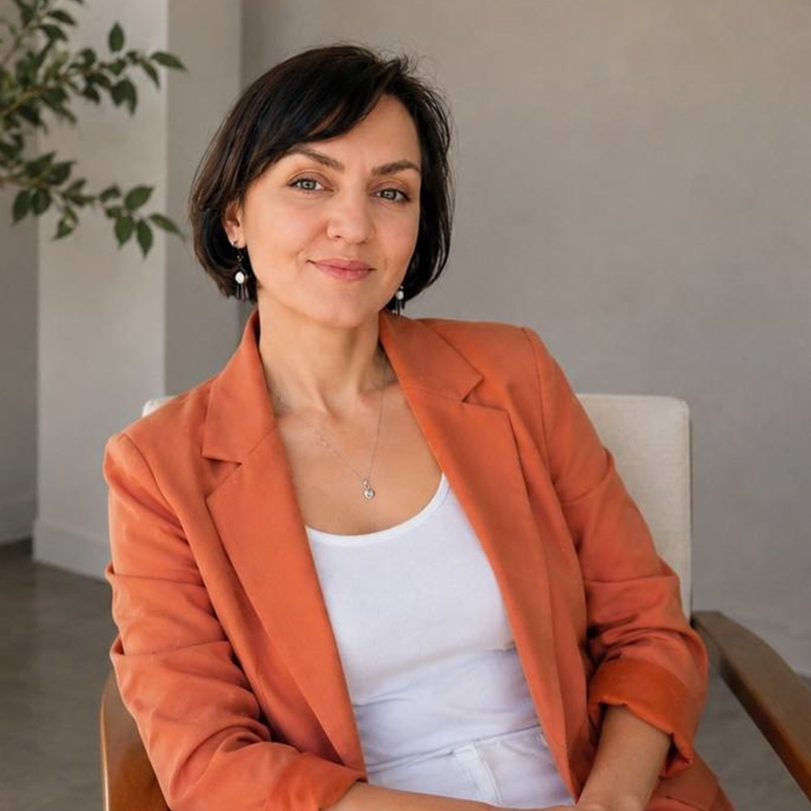
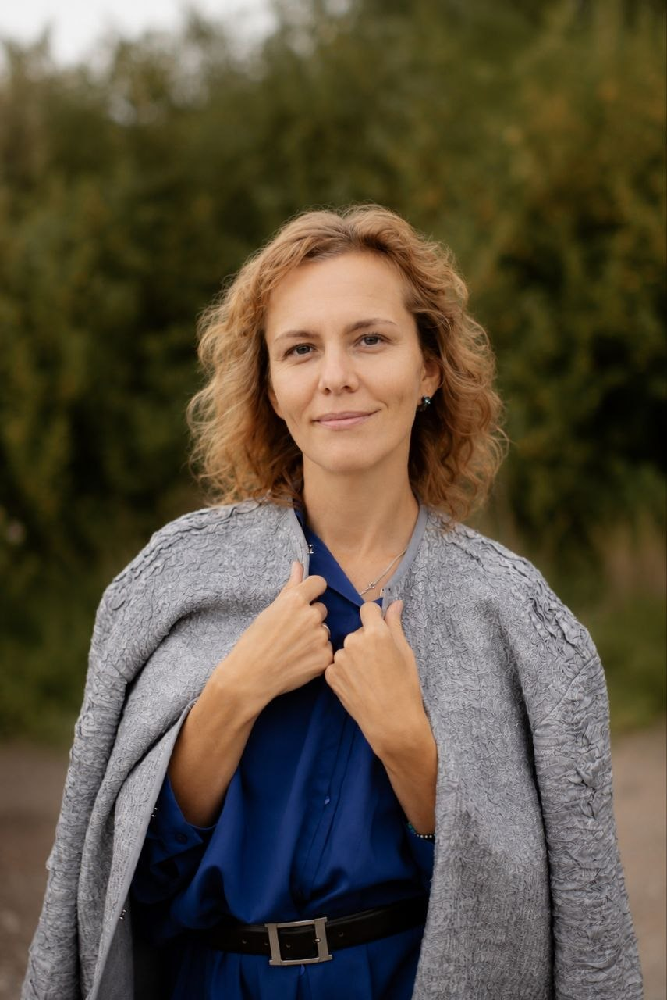

Evolution House · Дом Эволюции
Школа перехода на следующий уровень жизни
Evolution House — школа практик, обучения и сопровождения для людей, которые проходят важный жизненный переход: в отношениях, работе, теле, состоянии или внутренней форме жизни. Здесь можно понять, какой первый шаг поддержки подходит именно сейчас.

С чего начать
Выберите, как вам проще начать
Не нужно сразу разбираться во всей школе. Можно пройти короткий подбор, сравнить направления или посмотреть программы, куда можно присоединиться сейчас.
01
Я впервые и не знаю, что выбрать
Ответьте на два вопроса. Навигатор предложит ближайший путь и первый шаг под вашу ситуацию.
Подобрать первый шаг 02Я хочу сравнить направления
Посмотрите, чем отличаются Архетипы, Off-Switch и Рейки, и какой первый шаг есть в каждом пути.
Сравнить направления 03Я уже выбираю программу
Откройте форматы с датами, условиями участия и ближайшим шагом.
Смотреть открытые программыУзнавание
Когда по-старому больше не получается
Если вы узнаёте себя в этих фразах, сначала достаточно увидеть, что именно сейчас просит внимания: силы, реакция, следующий этап или конкретная область, где стало трудно.
Я больше не могу жить по-старому
Прежний способ строить отношения, работать, справляться, быть сильным или всё держать на себе больше не ощущается своим.
Я понимаю, что происходит, но не могу это изменить
Тревога, контроль, избегание, злость, усталость или внутренний стоп понятны головой, но в жизни всё снова идёт по знакомому сценарию.
Я слишком долго держу всё на себе
Сил хватает только на обязательное. Отдых не возвращает. Просить помощи трудно, а остановиться кажется невозможным.
Одна и та же жизненная ситуация может требовать разного способа работы. Важно не только увидеть, где трудно, но и понять, что именно сейчас нуждается в изменении.
Найти свой путьЖизненные территории
Если проще начать с вашей ситуации
Выберите область, и навигатор сразу откроет подходящий вопрос. Так не нужно угадывать название программы заранее.
01
Отношения и близость
Когда вы снова оказываетесь в тревоге, контроле, обиде, спасательстве или не понимаете, как быть рядом по-другому.
Начать с этой темы 02 Семья и родительствоКогда вы слишком много отдаёте семье, теряете себя в роли или не узнаёте свою жизнь после больших перемен.
Начать с этой темы 03 Работа, деньги и реализацияКогда прежний успех больше не вдохновляет, новое направление неясно или вы знаете, что делать, но снова не можете начать.
Начать с этой темы 04 Тело, силы и восстановлениеКогда отдых не возвращает, сил остаётся только на обязательное, а тело больше не соглашается жить по старым правилам.
Начать с этой темы 05 Страхи и повторяющиеся сценарииКогда вы многое понимаете, но каждый раз снова оказываетесь в знакомой реакции.
Начать с этой темы 06 Большие переменыКогда прежний этап уже завершился, но новый способ быть в отношениях, работе, семье или с собой ещё не сложился.
Начать с этой темыНаправления
Три направления для разных задач
Архетипы — когда меняется роль или жизненный этап. Off-Switch — когда старая реакция включается быстрее выбора. Рейки — когда нужна регулярная практика ресурса и опоры.

новый этап
Путь архетипов
Когда прежняя роль или способ жить стали тесныЕсли дело уже не в одной отдельной проблеме, этот путь помогает увидеть, что завершилось, на что можно опереться и какой следующий этап человек сейчас собирает.
Мягкий вход: Вкус лёгкости или Вкус силы
Посмотреть Архетипы
старая реакция
Путь свободы от травм
Когда вы всё понимаете, но старая реакция включается раньше васЭтот путь работает там, где важно вернуть возможность выбирать иначе в момент тревоги, контроля, избегания, стыда, внутреннего стопа или срыва.
Первый шаг: Off-Switch Training в записи
Посмотреть Off-Switch
ресурс и опора
Путь Рейки
Когда нужен ресурс, опора и свой способ наполнять себяЕсли человек долго живёт на остатке сил, ему может быть нужен не ещё один анализ жизни, а регулярная личная практика, которая помогает возвращать себе опору и контакт с собой.
Первый шаг: Рейки I
Посмотреть РейкиЕсли пока непонятно, с чего начать, пройдите короткий навигатор.
Подобрать первый шагСейчас можно присоединиться
Ближайшие программы
Здесь ближайшие форматы, в которые можно присоединиться сейчас. Выберите по задаче, дате и глубине участия. Если сомневаетесь, сначала пройдите короткий навигатор.
Вкус лёгкости
онлайн-неделя · 10–16 сентября 2026
Для тех, кто устал жить через контроль и «надо» и хочет мягко вернуться к телу, желанию и живому выбору.
Вкус силы
онлайн-неделя · 24–30 сентября 2026
Для тех, кому важно почувствовать зрелую силу, опору, масштаб и способность держать своё пространство без борьбы.
Высокая Глубина
онлайн-менторинг · 7 октября — 6 декабря 2026
Онлайн-менторинг вокруг одной большой темы, которая давно просит не вдохновения, а точного сопровождения.
Ретрит на Пхукете: Линия удачи
ретрит · 5–12 ноября 2026 · Пхукет
Живое погружение для перехода через движение, масштаб, встречи и ощущение дороги, где легче услышать следующий шаг.
Ретрит на Лангкави: Ядро силы
ретрит · 15–22 ноября 2026 · Лангкави
Живое погружение для возвращения к глубокой опоре: вода, тишина, зелень и пространство, где можно собраться без привычного шума.
Off-Switch Training в записи
тренинг в записи · доступ открыт
Практический тренинг в записи для ситуаций, где старая эмоциональная реакция включается быстрее выбора.
Групповой Off-Switch Training
живой онлайн-формат с Угисом
Для тех, кому мало записи: нужны встречи, вопросы и устойчивый ритм практики между занятиями.
Рейки I
первая ступень · идёт набор
Первый вход в личную практику для ресурса, внутренней опоры и регулярного возвращения к себе.
Квантовая активация
личная работа · точка перехода
Когда уже созрело одно решение, запуск или внутренний сдвиг, и нужно пройти эту точку быстро и глубоко.
Индивидуальный ретрит
2 дня · личное погружение
Для перехода, которому нужна смена среды, тишина, личное поле Светланы и маршрут, собранный вокруг вашей задачи.
Персональный маршрут
6–9 месяцев · личное сопровождение
Когда меняется не один вопрос, а вся система жизни: отношения, дело, тело, деньги, выбор и внутренняя опора.
Люди школы
Кто держит метод и ведёт программы
Evolution House держится на методологии, живом ведении и бережном сопровождении. Участник встречает не безличную систему, а людей, которые помогают пройти процесс в подходящем темпе.
Команда
Методология, ведение и поддержка
В Evolution House важны не только темы, но и люди рядом с участником. Светлана задаёт методологию школы, авторы ведут направления, Мастера и наставники помогают пройти процесс в подходящем темпе.
Познакомиться со школой и ведущими
Основательница и автор методаСветлана Страусс
Создаёт методологию Evolution House и ведёт ключевые направления: Архетипы, Рейки, менторинг и ретриты.

Автор направленияУгис Страусс
Ведёт Путь свободы от травм и работу Off-Switch там, где понимание уже есть, но старая реакция включается быстрее выбора.


Мастера и наставники
Ведут практики, поддерживают участников и помогают выбрать следующий шаг без давления.
общая логика школы, направления и качество процесса
программы, практики, встречи и работа с состоянием
ориентация, обратная связь и бережный следующий шаг
Начните с короткой ориентации
Если не хочется выбирать наугад, навигатор задаст несколько простых вопросов и предложит первый шаг под вашу ситуацию.